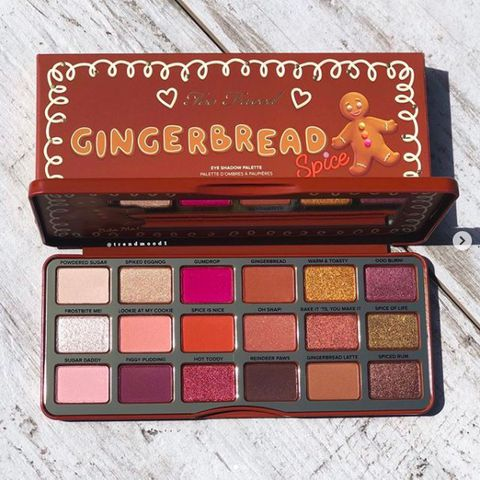
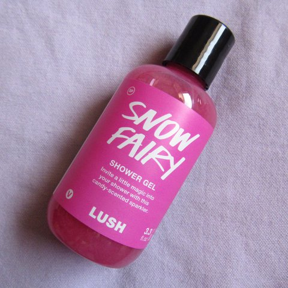
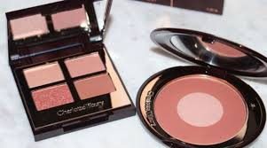
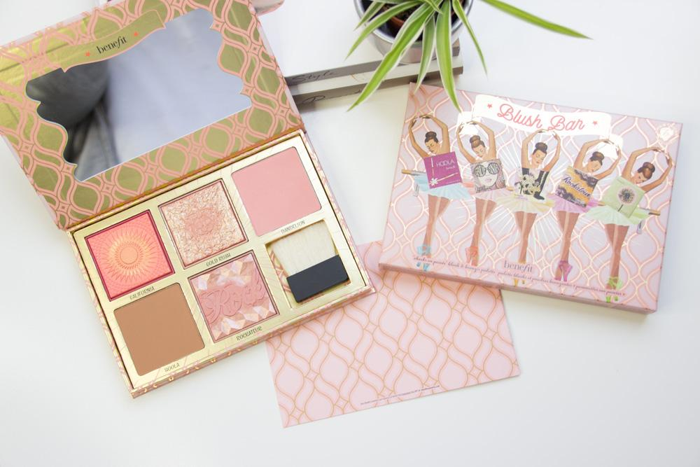
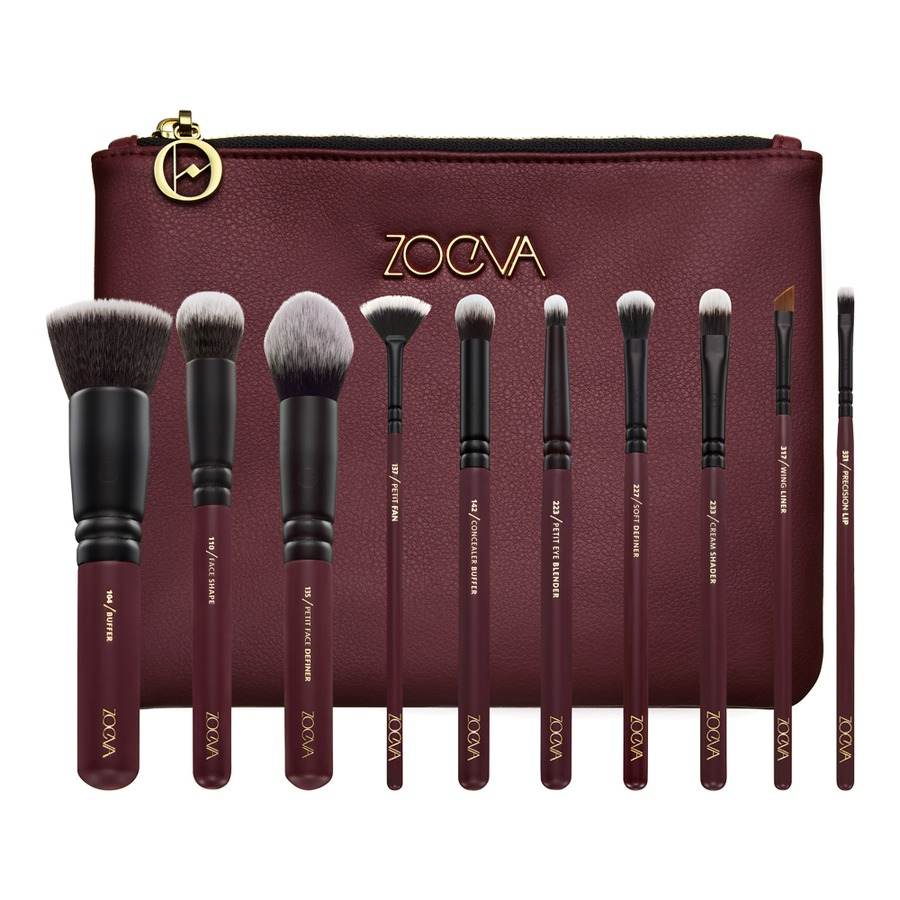
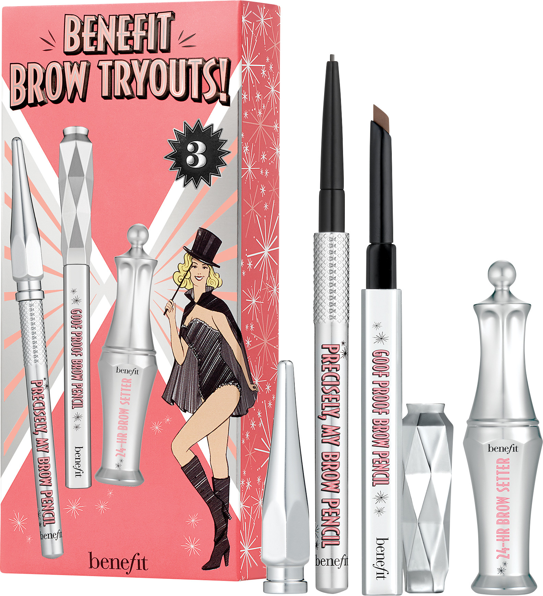

For the love of
Make-up
Treat Yo Self....
That time of year has come again. Here are a few items i hope to find in my Christmas
stocking this year.
Christmas Wish List |
||
|

Too Faced has released this beautiful palette just in time for Christmas. Available at Debenhams Online. |

This shower gel smells divine and has a bubblegum scent. Available from Lush Cosmetics. |

The Pillow Talk palette and blush are going to be a favourite with beauty lovers this year. Exclusive to Charlotte Tilbury |
|

This Benefit blush palette is great for travel. Online at Boots |

Zoeva make great brushes, and this set also looks beauitul. Find them at Cult Beauty |

Benefit are the best for gift sets. Take a look at Boots online. |
Some of my favourite places to purchases makeup online.
I find these companies
have a great customer service and my orders always arrive on time and in great condition.
No bust packages.
Cult Beauty
Brown Thomas
Cloud 10 Beauty
Makeup Products I Love
- Foundation
- Powder
- Mascara
- Blusher
- Concealer
The Beauty Lingo
- Contouring
- Contouring is used to define and enchance the areas of the face. You can achieve this with the use of powder or cream products. Using darker shades to carve to hollows of the face and using lighter colours to highlight or enhance your features.
- Baking
- When you let translucent powder set on your face. It allow the natural heat of your face to set your foundation. Giving it an extra hold that lasts longer.
- Cut Crease
- An eyeshadow technique that allows the person the define the crease by cutting it with concealer
Top of document
© Copyright 2018 For the Love of Makeup.